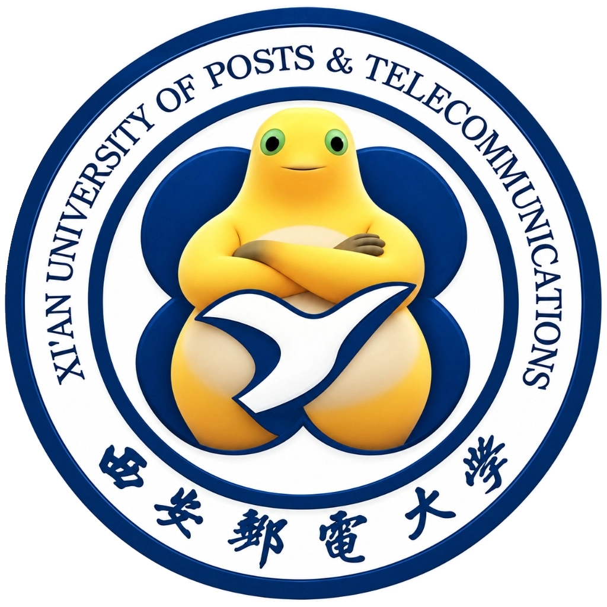

Xi'an University of Posts & Telecommunications
西安邮电奶龙大学
奶龙已就位,即将护送你前往西安邮电大学官网。
- 1950 年建校
- 爱国 · 求是 · 奋进
- 四邮四电 · 自封
- 奶龙特级护学
西安邮电大学奶龙群:QQ 群点击复制
第一次来?先看看

西安邮电奶龙大学Xi'an University of Posts & Telecommunications
奶龙已就位,即将护送你前往西安邮电大学官网。
西安邮电大学奶龙群:QQ 群点击复制
第一次来?先看看